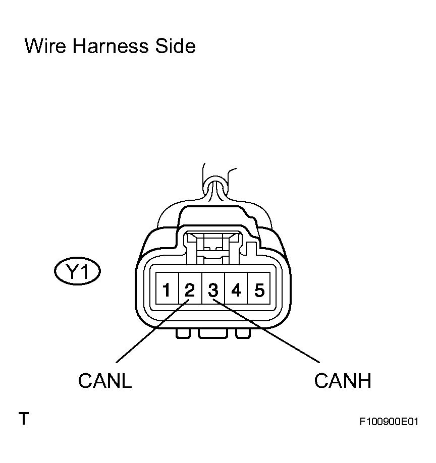
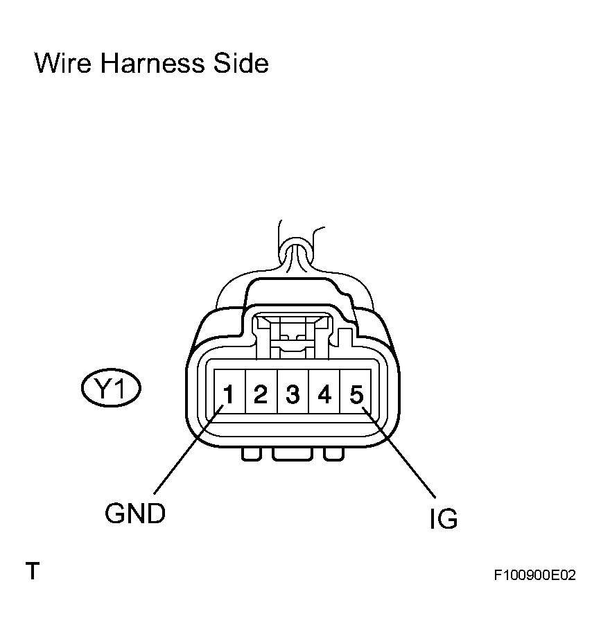

Inspection Procedure
- CHECK CAN BUS LINE FOR DISCONNECTION (YAW RATE SENSOR SUB BUS LINE)
- Disconnect the Y1 sensor connector.
- Measure the resistance of the wire harness side connector.
Standard resistance
TESTER CONNECTION SPECIFIED CONDITIONTester Connection Condition Specified Condition Y1-2 (CANL) - Y1-3 (CANH) Ignition switch OFF 54 to 69 Ω
NG : REPAIR OR REPLACE YAW RATE SENSOR SUB BUS LINE AND CONNECTOR (CANH, CANL)

Courtesy of © TOYOTA, LICENSE AGREEMENT TMS1002OK : Go to Next Step
- CHECK WIRE HARNESS (YAW RATE SENSOR - BATTERY AND BODY GROUND)
- Disconnect the Y1 sensor connector.
- Measure the resistance of the wire harness side connector.
Standard resistance
TESTER CONNECTION SPECIFIED CONDITIONTester Connection Specified Condition Y1-1 (GND) - Body ground Below 1 Ω - Measure the voltage of the wire harness side connector.
Standard voltage
TESTER CONNECTION SPECIFIED CONDITIONTester Connection Condition Specified Condition Y1-5 (IG) - Body ground Ignition switch ON 10 to 14 V
NG : REPAIR OR REPLACE HARNESS AND CONNECTOR

Courtesy of © TOYOTA, LICENSE AGREEMENT TMS1002OK : REPLACE YAW RATE SENSOR